特集
パイナップル・モデルズへようこそ！！
9年ほど前より、Nゲージの収集も趣味にしてますので、所有者の一部をご紹介します。
大した加工はしてない(というかほぼ無加工)ですが...
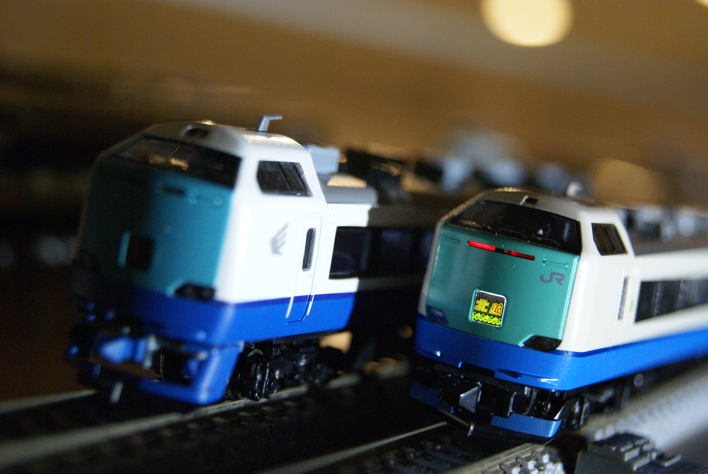
485系3000番台R編成兄弟
TOMIXの方(右)は17年10月頃の入線、MicroAceの方(左)は19年12月頃の入線です。
両方とも中古品ですが、TOMIXの方はアキバのリバティで、マイクロの方はポポン秋葉原店にて購入。
マイクロの方は買って半年ぐらいでTOMIXから新品が発表されてえ～ってことがありましたw
(今考えたら新品9両25000っていい時代でしたよね...)
そもそも保線状況がオワコンなのもあるんですが、マイクロの方はモーターの調子がすこぶる悪く、観賞用です。
実車は、新潟時代によく追っかけてました。ラストランのときにも見に行きました。懐かしい。
この世で一番好きな電車なのですが、古い模型なのもあり、見つけるのに相当難儀しました。12000で買いましたが、本当にいい買い物でした。
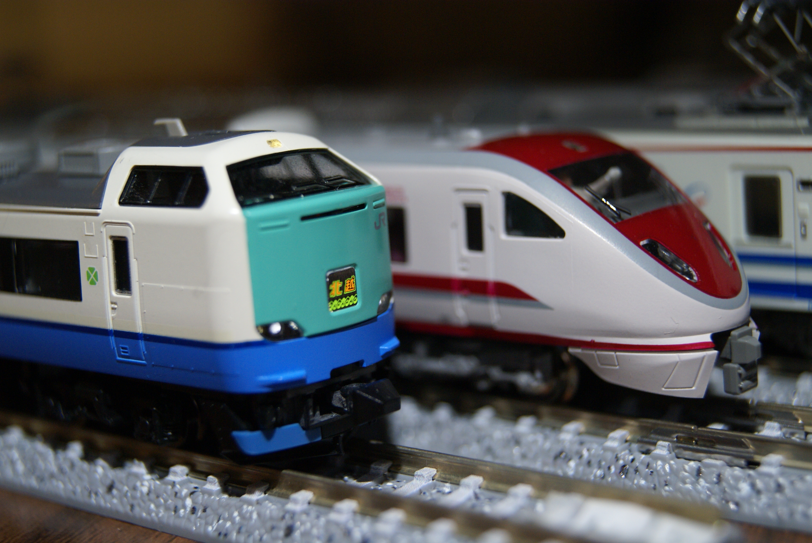
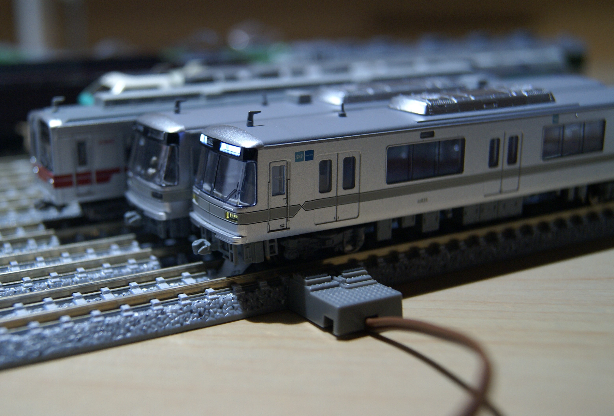
日比谷線三兄弟
これも超欲しかった模型達。5ドアは19年1月、3ドアは19年10月、20050型は20年10月に入線。20050型は1000型が来るまでは長い間最新形式でした。
珍しく全て新品です。03系5ドア車は発表されたときから予約しました。当時の物価でも4万はバカ高く、好成績の対価として勝ってもらいました...(全部そうですが)
しかし、ず～っと延期されて家に届くまでかなり長い時間がかかりましたね...
もったいなくて方向幕はつけられてません(もとに戻せないですし)
実車は塾通いで散々お世話になりました。なんだかんだ4年ほどは使わせてもらいました。
ここらへんの話は制作中のBVE使用ゲーム「MetroDrive 日比谷編」本編に開発秘話的な感じで乗っけてるので、完成した暁には是非！
なんとなく実写に比べて3人とも腑抜けた感じがありますが、可愛らしくて好きです。
なんとなくメトロステッカーの位置が高かったり、5ドアのフォントが適当だったりしてますが、遠目に見ればわかりませんしいいでしょう。
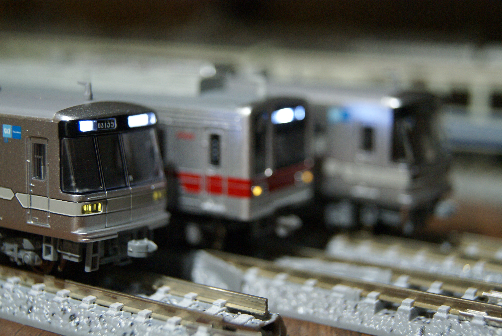
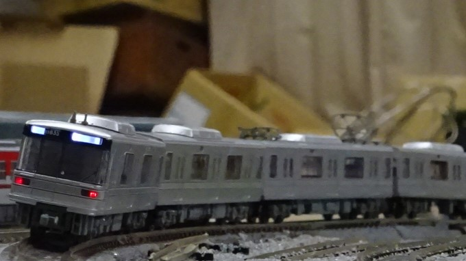
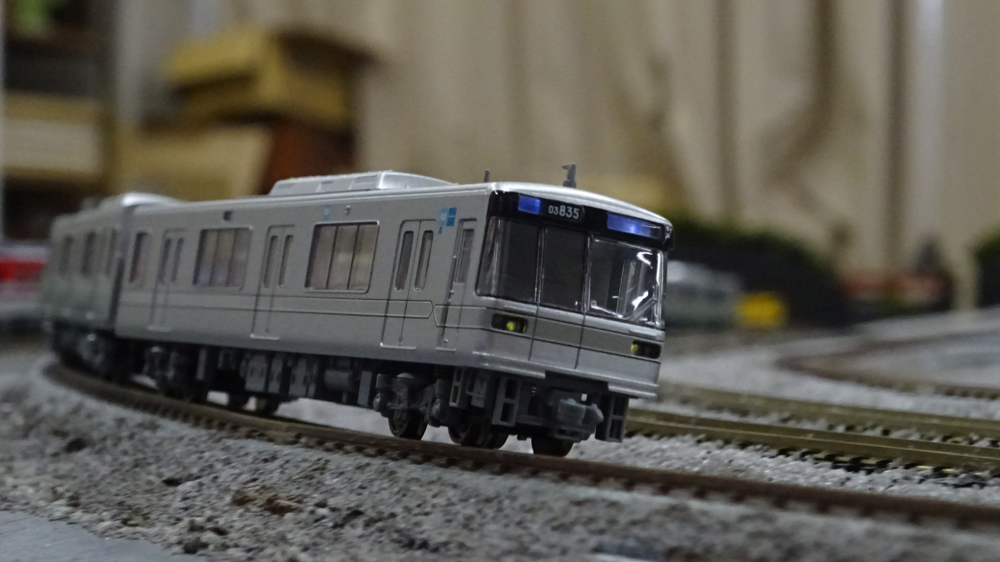
どの角度から見ても愛くるしいですね^_^
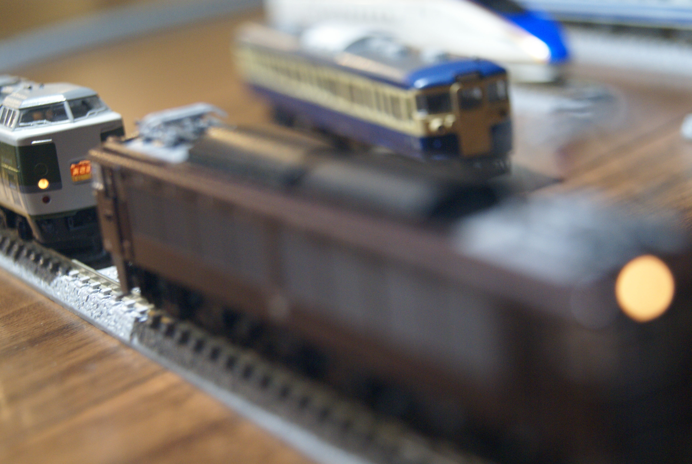
横軽軍団
写真これしかなかった(´・ω・｀) EF63重連+189系あさま
EF63は19年5月に地元のハードオフで5000(!)で、189系は18年の12月頃の入線です。
EF63はTOMIX25th記念品でもあります。貴重映像が載ってるDVD付きです。こっちがメインかも。
勿論強調運転させますが、メーカーが違うのでカプラーも繋がらなければ出力も違うので後ろになる方が推進する形になります()
推進運転ってのが昔から好きで、いろんな資料とかを読み漁ってました。懐かしい。
189系は、意味もなく最後の最後に全色乗りました。一応東京に帰ってきた後でした。どうしてもあずさ色でしか鳴らないという鉄道唱歌を聞きたかったんですが、聞けずじまいでしたね...
帰りはE351とか、カクティーとかでしたね... 今やもう誰もいません。時代の流れ怖い。
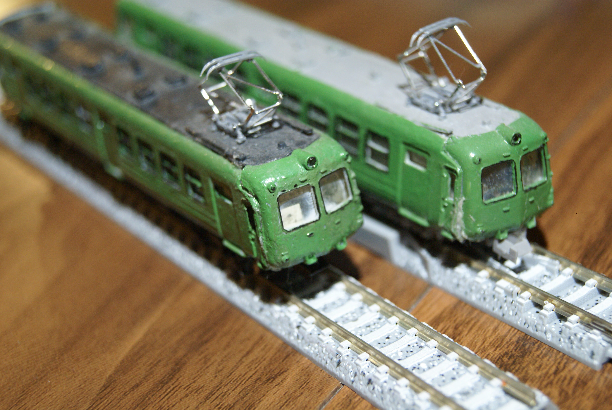
熊本電鉄の5000系です。19年頭から作り出して、末に完成しました。
試作車を除けば私初のエコノミーキット製の車両です。
エコノミーキット由来は8090系、メトロ6000,8000系を建造中です(19末~)が、中々暇がなくて作れていません...
インフルをやったときに、父が気を利かせてハードオフに売ってたこのキットを買ってきてくれたことで作りました。
貫通顔は付属の8500の顔パーツをなんとかして作りました。本当に大変だった。
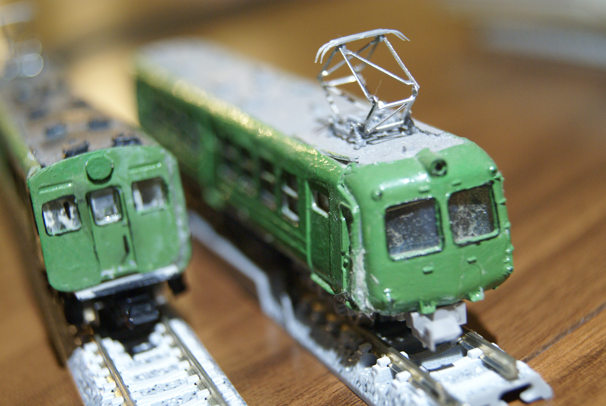
当時、土曜の夕方に再放送してたケロロ軍曹にハマってて、本当はケロロラッピングをする予定で熊電使用にしました。
ただ、当時の技術だと白いマステにマッキーで着色するのが精一杯で、あまりに見栄えが悪かったので結局そのままになってます。
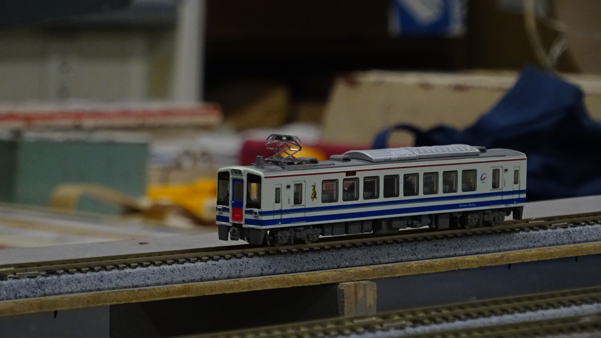
HK100です。19年末に行ったなにがしかの鉄道サミット的なやつで中古で売ってたので買いました。鉄コレからの改造品です。
箱なし、付属品なし、カプラー欠品でしたが、そこそこディテールが高くて満足です。
485系と後述するHK683系のつけあわせという側面もありますが、その年の10月頃に旧友から呼ばれて新潟に里帰りした時の思い出という面もあります。
あれ以来一度も帰省してませんが、653上沼垂色という言い訳もできましたし、そろそろ行きたいです。
勿論新潟にいた当時もお世話になりました。あの時はまだトキ鉄と直通運転をしてまして、学校からチラッと見えたりした時は嬉しかったものです。
24年の2月の頭にスキーに行ったときに久々に実車を見ました。全部があのときのままで安心しましたが、側面が割とベコベコで大丈夫なのかな...とは思いました。
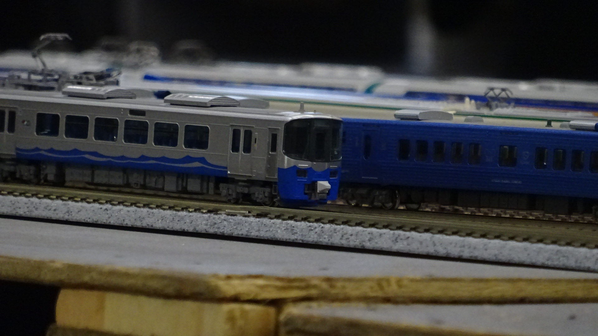
ET122型です。いつ勝ったかは忘れました(18年ぐらいだったかな??)
こいつもよくお世話になりました。金沢方面への旅行の時は特に。
なんとなく、気動車だからこそ「旅行が始まるぞ」って感じでワクワクしたのを覚えています。
ET127とどっちにするか迷った挙げ句、特急車との相性を考えてこれにしました。最寄りは春日山ですけど・ω・
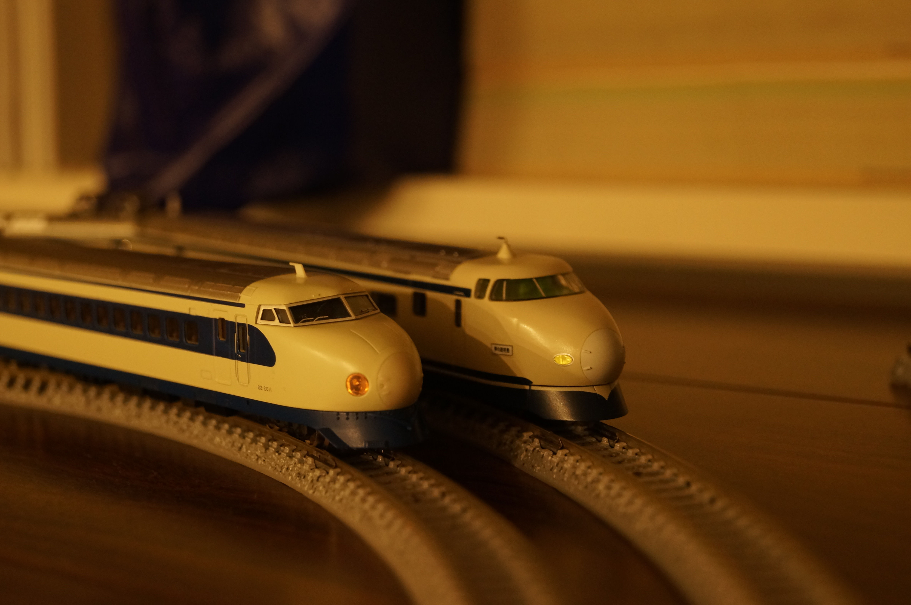
手前が0系(小窓車)です。
地元の個人経営の模型屋で買いました。一両1000円とかで驚いたことがあります。たしか運動会の徒競走で珍しく一等賞だったことの褒美でした。18年5月とかかな？
これも相当古い模型です。カプラーの形が穴と棒のやつです。
年なりに動作が滑らかではなく、モーターの音がめっちゃでかいです。いかにも模型って感じ。
イメージ的には博多のQ3編成なんですが、車番印刷済みですし、まぁわかんないっすね。
ここ を見る限りだと1983年の商品っぽい。えっ、40年以上前? 本当だったら間違いなく最古の模型でしょう。
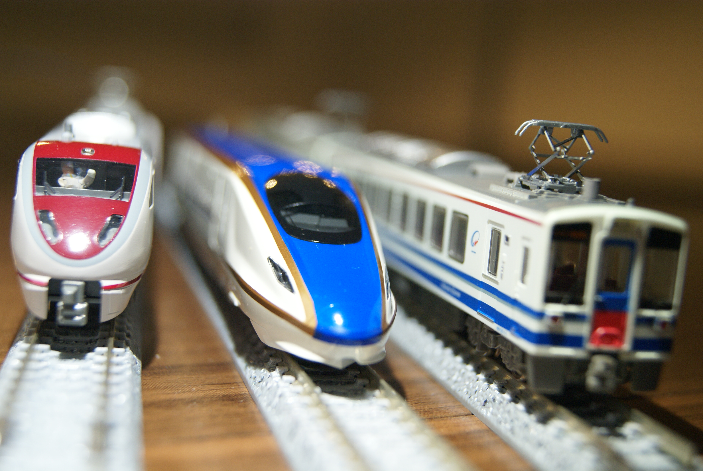
E7系(真ん中)
私初のNゲージです。スターターキットに入ってました。
当時はプラレールとのクオリティの違いに驚いたものです。
こいつも新潟時代によく使ってました。東京に出る時は毎回上越妙高からこれでしたね...
今や上越も北陸も全部こいつですし、味気無くなっちゃいました...
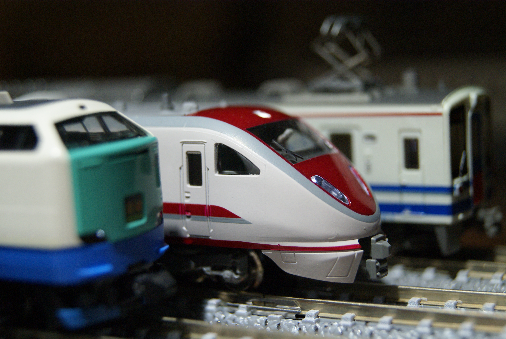
HK683系(683系8000番台)です。
19年12月頃に新品で購入しました。
私が新潟に移住したのは北陸新幹線開業直後なので、実際には見たことがないのですが、配色と造形に一目惚れして購入。
北陸路の車両たちに非常によく馴染みます。
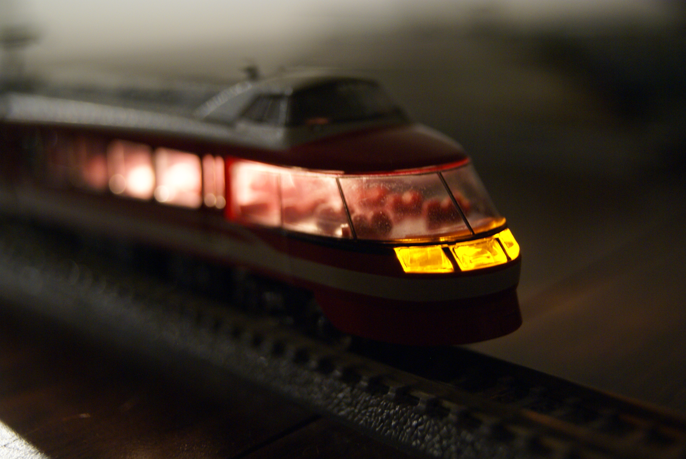
小田急LSEの新塗装です。
18年ごろに地元の模型屋で激安(7000ぐらい？)だったので購入。
前所有者に相当大事にされてた模型のようで、室内灯入りで、モーターもバッチリです。
05年の模型らしいですが、古さを感じない走りを見せてくれます。
それとは別に、購入当時から今に至るまで煙草の匂いが結構酷かったり、箱がガバガバで閉じなかったりと、前所有者の使い込みも感じます。
実車は特に関わりがないので割愛。あんま小田急の方行かなくて...
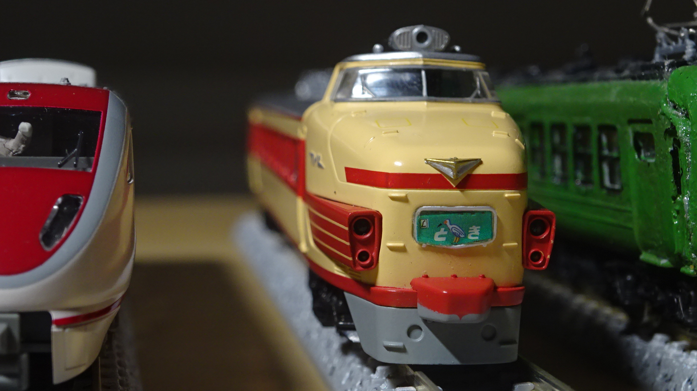
先ほどのLSEと同じ模型屋での購入。18年頃ですかね。これは5000円ぐらいだった気がします。
161・157系混合の「時のいたずら」ときです。（ネーミングが謎）
1965年に一月だけ組成された編成らしいです。このなんともいえないニッチさが非常にマイクロっぽいです。
これは父が観賞用として買ったものですが、多忙だかなんだかで私にくれたので現在は私が管理してます。有り難し親の愛...
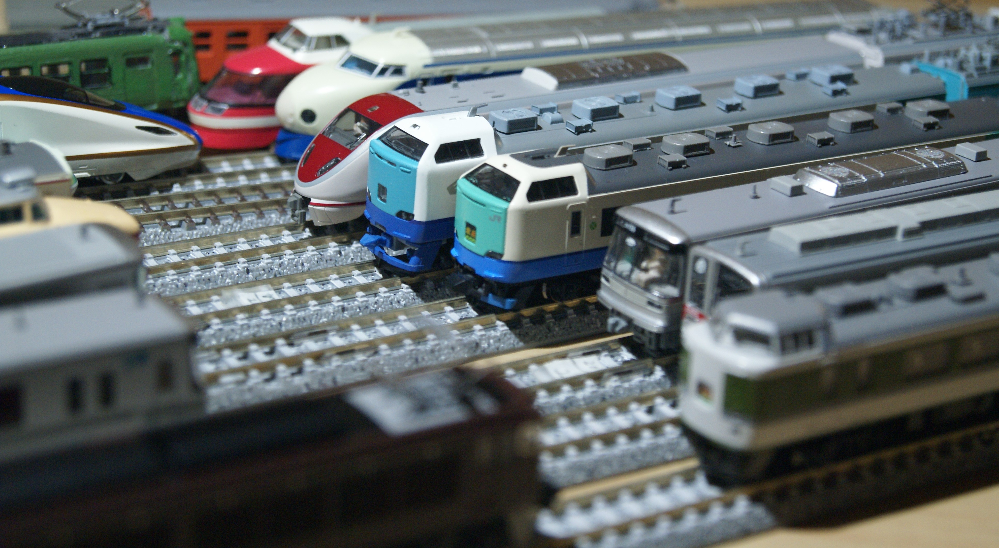
最後は集合写真で〆。